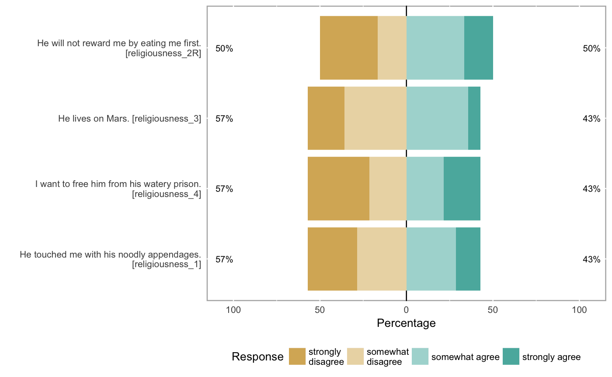
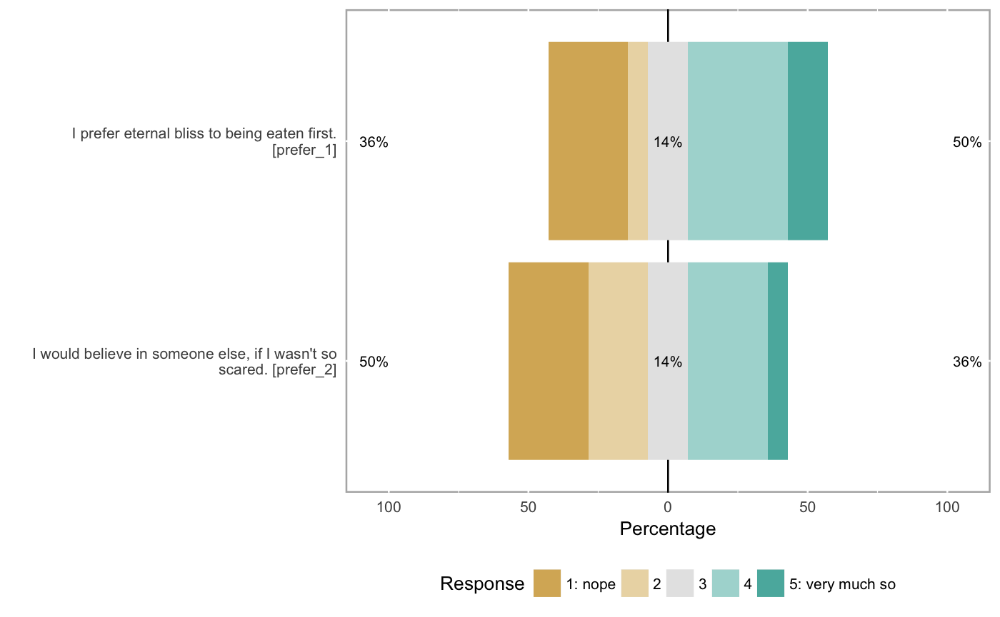

If you've retrieved an item table using formr_items() you can use this
function to aggregate your multiple choice items into mean scores.
If you do not have a item table (e.g. your data was not collected using formr, you don't want another HTTP request in a time-sensitive process).
Example: If your data contains Extraversion_1, Extraversion_2R and Extraversion_3, there will be two new variables in the result: Extraversion_2 (reversed to align with _1 and _2) and Extraversion, the mean score of the three.
formr_aggregate(survey_name, item_list = formr_items(survey_name, host = host), results = formr_raw_results(survey_name, host = host), host = "https://formr.org", compute_alphas = FALSE, fallback_max = 5, plot_likert = FALSE, quiet = FALSE, aggregation_function = rowMeans, ...)
| survey_name | case-sensitive name of a survey your account owns |
|---|---|
| item_list | an item_list, will be auto-retrieved based on survey_name if omitted |
| results | survey results, will be auto-retrieved based on survey_name if omitted |
| host | defaults to https://formr.org |
| compute_alphas | defaults to TRUE, whether to compute |
| fallback_max | defaults to 5 - if the item_list is set to null, we will use this to reverse |
| plot_likert | defaults to TRUE - whether to make |
| quiet | defaults to FALSE - If set to true, likert plots and reliability computations are not echoed. |
| aggregation_function | defaults to rowMeans with na.rm = FALSE |
| ... | passed to |
results = jsonlite::fromJSON(txt = system.file('extdata/gods_example_results.json', package = 'formr', mustWork = TRUE)) items = formr_items(path = system.file('extdata/gods_example_items.json', package = 'formr', mustWork = TRUE)) results = formr_recognise(item_list = items, results = results) agg = formr_aggregate(item_list = items, results = results, compute_alphas = TRUE, plot_likert = TRUE)#> #> Reliability analysis religiousness #> Call: psych::alpha(x = results[, scale_item_names], title = save_scale, #> check.keys = FALSE) #> #> raw_alpha std.alpha G6(smc) average_r S/N ase mean sd #> 0.78 0.79 0.77 0.48 3.7 0.093 2.4 0.91 #> #> lower alpha upper 95% confidence boundaries #> 0.6 0.78 0.96 #> #> Reliability if an item is dropped: #> raw_alpha std.alpha G6(smc) average_r S/N alpha se #> religiousness_1 0.81 0.83 0.77 0.62 4.9 0.084 #> religiousness_2R 0.68 0.70 0.67 0.43 2.3 0.151 #> religiousness_3 0.68 0.67 0.62 0.41 2.1 0.140 #> religiousness_4 0.70 0.72 0.65 0.46 2.6 0.129 #> #> Item statistics #> n raw.r std.r r.cor r.drop mean sd #> religiousness_1 14 0.63 0.65 0.45 0.39 2.3 1.07 #> religiousness_2R 14 0.86 0.83 0.74 0.67 2.7 1.44 #> religiousness_3 14 0.83 0.85 0.81 0.72 2.3 0.91 #> religiousness_4 14 0.80 0.80 0.74 0.62 2.3 1.20 #> #> Non missing response frequency for each item #> 1 2 3 4 5 miss #> religiousness_1 0.29 0.29 0.29 0.14 0.00 0 #> religiousness_2R 0.29 0.14 0.29 0.14 0.14 0 #> religiousness_3 0.21 0.36 0.36 0.07 0.00 0 #> religiousness_4 0.36 0.21 0.21 0.21 0.00 0#> #> Reliability analysis prefer #> Call: psych::alpha(x = results[, scale_item_names], title = save_scale, #> check.keys = FALSE) #> #> raw_alpha std.alpha G6(smc) average_r S/N ase mean sd #> 0.76 0.76 0.62 0.62 3.2 0.13 2.8 1.3 #> #> lower alpha upper 95% confidence boundaries #> 0.51 0.76 1 #> #> Reliability if an item is dropped: #> raw_alpha std.alpha G6(smc) average_r S/N alpha se #> prefer_1 0.62 0.62 0.38 0.62 NA NA #> prefer_2 0.62 0.62 0.38 0.62 NA NA #> #> Item statistics #> n raw.r std.r r.cor r.drop mean sd #> prefer_1 14 0.91 0.9 0.71 0.62 3.0 1.5 #> prefer_2 14 0.89 0.9 0.71 0.62 2.6 1.4 #> #> Non missing response frequency for each item #> 1 2 3 4 5 miss #> prefer_1 0.29 0.07 0.14 0.36 0.14 0 #> prefer_2 0.29 0.21 0.14 0.29 0.07 0agg[, c('religiousness', 'prefer')]#> religiousness prefer #> 1 3.0 4.0 #> 2 1.0 1.0 #> 3 1.0 1.0 #> 4 2.5 4.0 #> 5 2.5 3.0 #> 6 3.0 3.5 #> 7 3.0 1.5 #> 8 1.5 2.5 #> 9 2.0 3.0 #> 10 3.0 4.0 #> 11 1.2 1.5 #> 12 2.5 1.5 #> 13 3.5 4.5 #> 14 3.8 4.5